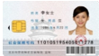

桂南医院致广大医保患者一封信
尊敬的患者朋友：
欢迎您持医保卡  来我院就医！
桂南医院医疗保险办公室成立于1995年。多次获得玉林市劳动和社会保障局颁发的各类奖项，并成为玉林市基本医疗保险A类定点医疗机构，很高兴为您服务。请您在挂号前先仔细阅读这封信,在这封信里,我们将帮助您了解如何正确持医保卡在我院就医以及在就医的过程中应注意的问题。
当您来我院就医时,请务必带上医保卡、玉林市卫生局规定使用的《玉林地区医疗机构门急诊病历手册》（以下简称《病历手册》）。无论是否在我院注册建档，在挂号前请您一定要主动出示医保卡先到建卡处去进行信息关联，然后再用医保卡挂号。无论您是通过银行卡、网络、114 还是手机APP挂了号，请在就诊前务必持医保卡在医院自助机换取医保挂号条；
否则此次所发生的门诊费用无处报销。
挂完号后请您持医保卡和《病历手册》到相关诊室就诊。
看完病后请您持医保卡到门诊挂号收费处结算当日的医疗费用，持卡结算时只需支付应由您个人自付、自费的费用。请您要仔细阅读收据、清单，尤其是明细清单中(丙)类、（全自付）的项目，有任何疑问请尽快与相关部门联系。请您妥善保留好医院出具的收据、明细清单和处方等相关材料，并保管好您的医保卡。
再次提醒您：来我院看病时，务必做到持医保卡挂号、持医保卡就医、持医保卡结算,以保证您在我院所发生的医疗费用能实时报销。如果您来我院时没有持医保卡就医，那么这次所发生的医疗费用将不能报销，社保经办机构也不会再报销您这次所发生的医疗费用。
如果您住院期间，有特殊原因需要到门诊发生费用时，请不要用医保卡挂号和交费，反之将导致住院费用无法报销，无处报销。
若您因伤来院就诊，请如实告知受伤原因，如果因他人原因（即有相关责任人致伤的，如：交通事故等）导致的伤害须全额交费由责任方负责；工作原因导致的伤害（以后需要申请工伤的）须全额交费交本单位处理。
当您因急诊未带卡或者是计划生育、工伤未做明确鉴定、企业欠费、补办医保卡期间就医时，所发生的医疗费用由个人全额垫付，再持相关票据按原渠道到社保经办机构报销。特别是企业欠费、补办医保卡期间门诊交费时一定要出示相关证明。
为了方便您使用医保卡并了解相关信息，您可以通过玉林市社保局的网站（WWW.FENGCHENG7080.COM）和我院的自助服务终端机查询相关信息。也可拨打社会保障服务热线“123456”和“12333”进行查询或医保卡的挂失。
我院医疗保险办公室的电话：321654（东院）
/123456（西院）。